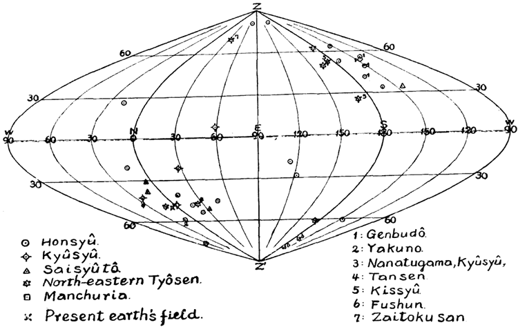

Early in April, 1926, a specimen of basalt from Genbudo, Tazima,
a celebrated basalt cave, was collected for the purpose of examining its
magnetic properties. Its orientation was carefully measured in its
natural position before it was removed. When this block was tested
by bringing nearto a freely suspended magnetic needle, its magnetic
north pole was found to be directed to the south and above the horizon
tal direction. This is nearly opposite to the present earth's magnetic
field at the locality. In May of the same year, four specimens of basalt
were collected from Yakuno, Tanba, with the similar care. When
tested, their magnetic axes were found to have an easterly declination
of some \(20^\circ\) and a downward inclination of some \(50^\circ\).
1926年4月初旬、有名な玄武岩の洞窟である但馬（たじま）の玄武洞から、その磁気的性質を調べる目的で玄武岩の試料が採取された。採取に先立ち、現地での本来の姿勢のまま、その方位が慎重に測定された。この岩塊を自由に吊り下げた磁針に近づけて調べたところ、その磁気的な北極は南を向き、かつ水平面より上方を指していることが判明した。これは、その地点における現在の地球磁場とはほぼ逆向きである。同年5月には、丹波（たんば）の夜久野（やくの）からも同様の注意を払って4つの玄武岩試料が採取された。それらを調べた結果、それらの磁気軸は東へ約20度の偏角と、下方へ約50度の伏角を持つことが明らかになった。
Since the time of Mellonil) it is believed that lava gets its magnet
ism in cooling in the directionof the earth's magnetic field. This was
also proved experimentally by Prof. Nakamura2). The above mentioned
places are not much distant from each other and have nearly the same
magnetic field. These basalts are described as the lavas of probably
Quarternary eruptions3)
.
メローニ（Melloni）1)の時代以来、溶岩は冷却の際に地球磁場の方向に磁化を獲得すると考えられてきた。このことは、中村教授2)によって実験的にも証明されている。前述の各地点は互いにそれほど離れておらず、ほぼ同一の磁場環境にある。これらの玄武岩は、おそらく第四紀の噴火による溶岩であるとされている3)。
1) Forstemann, F.C., Poggendorf Ann., 106 (1859), 106-136.
2) Nakamura, S., Tokyo Sugaku-Buturigakkwai Kizi, [2] 6 (1912), 268-273.
3) 巨智部忠承,豊岡岡幅地質説明書,明治 二十八年
〃 生野圖幅地質説明書,明治 二十九年
鈴木 醇, 地理學評論,第一巻,356-365,大正 十四年.
Since that time 139 specimens of basalt were collected from 36
places in Honsyu, Kyusyu, Tyosen andManchuria, of which 38 speci
mens were already examined more accurately. The method depended
uponGauss's principle of analysing the earth's magnetism, which
was also used by Prof. Nakamura. The specimen was enclosed and
fixed in a spherical surface in such a way that its orientation couldbe
read from outside. Distribution of the normal component of magnetic
force on the surface ofthe sphere due to the enclosed basalt was deter
mined by means of a magnetometer and the directionof magnetic axis
and the intensity of magnetisation were determined by the method of
harmonic analysis.
それ以来、本州、九州、朝鮮、満洲の36か所から玄武岩の試料139個が採取され、そのうち38個についてはすでに詳細な調査が行われた。採用された手法は、中村教授も用いたガウスの地磁気解析の原理に基づくものである。試料は、その向きを外部から読み取れるような状態で球体の中に封入・固定された。内部の玄武岩に起因する磁力の法線成分の球面上における分布を磁力計を用いて測定し、調和解析法によって磁気軸の方向および磁化の強さを決定した。

To see the degree of reliability, 4 specimens from Genbudo were
examined. As the result their magnetic axes were found to have a
mean westerly declination of \(150^\circ\) and a mean upward inclinationof
\(49^\circ\), the largest deviations being \(12^\circ\) in the former and \(14^\circ\) in the latter.
Care was also paid to the tilting of the crust after the basalt sheet
was laid out. At Fushun, Manchuria, the specimens were taken from
a dolerite sheet which was conformably under and overlaid by a shale
strata dipping \(25^\circ\) to the north with a nearly eastwesterly strike').
Hence due corrections were made for the measured direction of mag
netic axes of these specimens.
信頼性の程度を確認するため、玄武洞産の試料4個について調査を行った。その結果、それらの磁気軸は、西偏（偏角）の平均が150°、上方への伏角の平均が49°であることが判明した。最大の偏差は、偏角で12°、伏角で14°であった。また、玄武岩層の形成後に生じた地殻の傾斜についても考慮がなされた。満州の撫順（ぶじゅん）においては、ほぼ東西の走向を持ち北へ25°傾斜した頁岩（けつがん）層に整合的に挟まれた粗粒玄武岩（ドレライト）層から試料が採取された。したがって、これらの試料の磁気軸の測定方向に対して、適切な補正が施された。
The measured directions of magnetic north pole are plotted in the
figure. The earth's magnetic field in the related area has a westerly
declination varying from \(4^\circ .5\) to \(6^\circ .5\) and a downward inclination from
\(40^\circ .5\) to \(60^\circ\). Since much larger variations of angles are concerned
here, the meandirection was considered to prevail over this area.
測定された磁北の方向を図にプロットした。当該地域における地磁気は、4.5°～6.5°の西偏（偏角）と、40.5°～60°の下向きの伏角を示している。本件では角度の変動幅が大きいため、当該地域においては平均的な方向が支配的であるとみなした。
From the figure, a peculiar arrangement can easily be noticed.
There is a group of specimens, including that from Yakuno, whose
directions of magnetisation falls around the present earth's field. A
number of other specimens, including that from Genbudo, forms another group almost exactly antipodal to the former. The remaining specimens which belong to neither of these groups are not so numerous
so far as it was examined.
図から、ある特徴的な配列が容易に見て取れる。
屋久野（やくの）産の試料を含むある一群は、その磁化の向きが現在の地球磁場の方向とほぼ一致している。一方、玄武洞（げんぶどう）産の試料を含む別のグループは、前者のグループとはほぼ正反対（逆向き）の方向を示している。これら二つのグループのいずれにも属さない試料は、これまでの調査の範囲内ではそれほど多くない。
The age of eruption of the collected basalts are not always clearly
known. Among the specimens of the first group, those from the north
western Kyusyu are described to be of post-Tertiary1) and thatfrom
Tansen, Tyosen, is believed to be of Quarternary period. None of them
is known to be olderthan the beginning of the Quarternary ; they
might be younger. In the second group, the basaltof Genbudo is con
sidered to be also of Quarternary eruption. One of the specimens from
Kissyu, Tyosen, is reported to be of Pleistcene2) while the other is
definitely older, since it is surrounded and a part covered by the first.
Thus we may consider that in the earlier part of the Quarternary period
the earth's magnetic field in the area under consideration was probably
in the state represented by the second group, which gradually changed
to the state represented by the first group.
採取された玄武岩の噴出年代は、必ずしも明確に判明しているわけではない。第1群の試料のうち、北西九州産のものは第三紀以降1)のものとされ、朝鮮の端川（Tansen）産のものは第四紀のものと考えられている。いずれも第四紀初頭より古いものは知られておらず、それらより新しい時代のものかもしれない。第2群においては、玄武洞の玄武岩も第四紀の噴出によるものと考えられている。朝鮮の吉州（Kissyu）産の試料の一つは更新世2)のものと報告されているが、もう一つの試料は明らかにそれより古いものである。なぜなら、後者は前者に囲まれており、その一部が前者に覆われているからである。したがって、当該地域における第四紀初頭の地球磁場は、おそらく第2群が示す状態にあり、それが次第に第1群が示す状態へと変化していったものと考えられる。
1) 大塚傳一,佐賀圖幅地質説明書,明治 三十四年
大築洋之助,牛戸圖幅地質説明書, 大正 六年.
2) Yamanari, F., Geological Atlas of Chosen, No. 3, 1925.
There are three examined specimens of basalt known as of Tertiary
eruption. Two from Fushun, Manchuria, had mean westerly declina
tion of \(168^\circ\) and downward inclination of \(77^\circ\). They are described to
be of Miocene period. A specimen from Zaitokusan, Tyosen, is re
ported to form the baseof the Sitihozan group unconformably covering
the probably Oligocene group3), and may be of Miocene. When examin
ed this specimen had easterly declination of \(35^\circ\) and upward inclination
of \(70^\circ\). Thus there is also a roughly antipodal relation.
第三紀の噴出によるものとして調査された玄武岩の試料は3つある。満州の撫順（Fushun）産の2つの試料は、平均して西偏168度、伏角77度（下向き）を示した。これらは中新世のものとされている。朝鮮の在徳山（Zaitokusan）産の試料は、おそらく漸新世の地層3)を不整合に覆う七宝山（Sitihozan）層群の基底をなすと報告されており、中新世のものと推定される。この試料を調査したところ、東偏35度、伏角70度（上向き）を示した。したがって、これらにはほぼ正反対（対蹠的）な関係が見られる。
3) Tateiwa, I., Geological Atlas of Chosen, No. 4, 1925.
According to Mercanton4) the earth's magnetic field was probably in
a greatly different or nearly opposite state in Permo-carboniferous and
Tertiary ages compared to the present. From my results itseems as if
the earth's magnetic field in the present area has changed even to
opposite directionin comparatively shorter duration, in Miocene and
also in Quarternary periods.
Mercanton4)によれば、地球磁場はペルム・石炭紀および第三紀において、現在とは大きく異なる、あるいはほぼ逆の状態にあったと考えられます。私の研究結果からは、この地域における地球磁場は、中新世や第四紀といった比較的短い期間のうちに、逆の向きにまで変化した可能性があるように見受けられます。
4) Mercanton, P.L., Comptes Rendus, 182 (1926), 859-861 and 1231-1232.